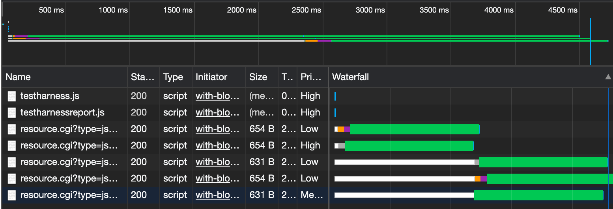
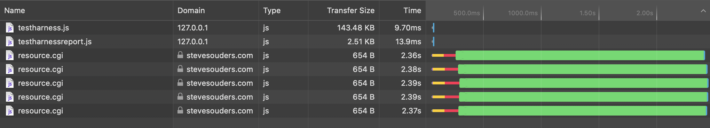
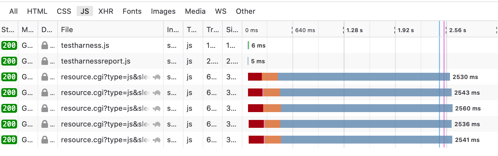

As of Chrome Version 85.0.4183.102, some Low or Medium priority scripts have a requestStart that is unnecessarily delayed by High priority scripts. This behaviour is different from Safari (Version 13.1.2 ) and Firefox (Version 80.0.1)
Some low priority scripts wait until high priority scripts finish
All requests start immediately
All requests start immediately
